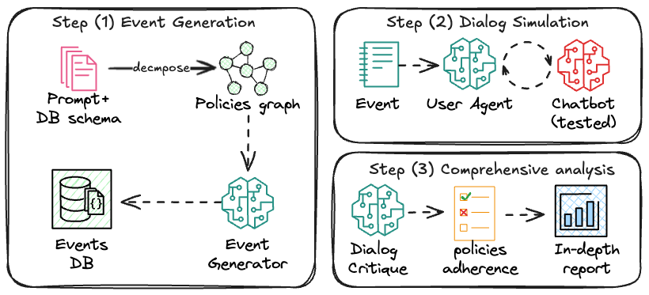

Architecture System Overview

The IntellAgent system pipeline consists of three main components:
-
Event Generation
- Input: Database schema and either:
- Chatbot system prompt, or
- Company policy documentation
- Output:
- Policy graph representation
- Generated events with varying complexity levels, including:
- Scenario descriptions
- User requests
- Initial database states
- Input: Database schema and either:
-
Dialog Simulation
- Input: Generated events and configured agents
- Output:
- Complete conversation transcripts
- Tool usage logs
- Agent reasoning traces
-
Fine-Grained Analysis
- Input: Dialog transcripts and policy requirements
- Output:
- Detailed performance metrics
- Policy compliance analysis
- Complexity-based evaluation reports
All the agents in IntellAgent are built using LagGraph framework
1. Event Generation
The IntellAgent Event Generator creates realistic chatbot interactions through a multi-stage pipeline that transforms high-level policies into concrete scenarios with corresponding database states. The process consists of three main components:
1.1 Policy Analysis & Graph Construction
The DescriptionGenerator class handles the initial policy analysis through these steps:
- Flow Extraction: Breaks down the system prompt into distinct flows
- Policy Extraction: Analyzes each flow to identify individual policies and assigns complexity scores
- Graph Construction: Creates a weighted graph where:
- Nodes: Individual policies with complexity scores
- Edges: Weighted connections (1-10) indicating the likelihood of two policies appearing together in the same task
- Edge weights are determined through LLM evaluation of policy pairs
1.2 Event Generation Pipeline
1.2.1 Description Generation
The system generates event descriptions through:
- Sampling policies based on target complexity:
- Starts with a random policy node
- Performs weighted random walks based on edge weights
- Continues until reaching desired complexity threshold
- Converting selected policies into natural language scenarios
- Generating expected chatbot behaviors
- (Optional) Refining expected behaviors through feedback iterations
1.2.2 Symbolic Representation
The EventsGenerator class transforms descriptions into concrete events by:
- Creating symbolic representations of entities and relationships
- Defining database constraints based on policies
- Converting symbolic representations into actual database states through:
- Table-specific insertion tools
- Validation of referential integrity
- Parallel processing of multiple events

2.Dialog Simulation Architecture
The Dialog Simulation system orchestrates conversations between simulated users and chatbots. The system consists of two main components: the Dialog Graph and Dialog Manager.
Dialog Graph
The Dialog Graph implements a state machine that manages the conversation flow between the simulated user and chatbot. Key features include:
-
State Management: Uses
DialogStateto track:- User and chatbot message history
- User thoughts and reasoning
- Critique feedback
- Stop signals for conversation termination
-
Node Types:
- User Node: Simulates user responses and tracks reasoning
- Chatbot Node: Handles chatbot responses and tool interactions
- Critique Node: Evaluates conversation adherence to policies
-
Flow Control:
- Manages message passing between participants
- Handles conversation termination conditions
- Supports conversation feedback loops through critique evaluation
Dialog Manager
The Dialog Manager controls the execution of dialogs and provides the infrastructure for running simulations. Key features include:
-
Configuration Management:
- Configures LLM models for user, chatbot, and critique agents
- Sets up environment tools and schemas
- Manages prompt templates and parsing functions
-
Execution Modes:
- Synchronous execution (
run) - Asynchronous execution (
arun) - Batch processing of multiple events (
run_events)
- Synchronous execution (
-
Memory Management:
- SQLite-based conversation storage
- Tracks tool calls and their outputs
- Maintains conversation history
Simulation Flow
- The Dialog Manager initializes the environment and agents
- For each event:
- User agent receives event details and expected behaviors
- Conversation alternates between user and chatbot
- Critique agent evaluates responses against policies
- Conversation continues until success or policy violation
Key Features
- Policy Enforcement: Built-in critique system to evaluate chatbot adherence to defined policies
- Parallel Processing: Support for parallel execution of multiple conversations
- Extensible Architecture: Modular design allowing for custom LLMs, tools, and evaluation criteria
- Comprehensive Logging: Detailed tracking of conversations, tool usage, and agent reasoning

3. Fine-Grained Analysis
The Dialog critique component performs a detailed evaluation of the conversation by analyzing:
- The user-chatbot dialog history
- The chatbot's system prompt
- The termination reason provided by the user agent
The critique process follows these steps:
-
Termination Validation: Verifies if the stated reason for dialog termination is accurate
- If incorrect: Provides feedback through
critique_feedbackand continues the dialog - If correct: Proceeds with policy analysis
- If incorrect: Provides feedback through
-
Multi-Level Policy Coverage Analysis:
- Identifies which event policies were tested during the conversation
- Determines which policies were violated (if any)
- Evaluates policies across different complexity levels, ranging from straightforward tasks to highly complex and nuanced edge-case scenarios
- Report Generation: Creates a detailed performance assessment based on the above analysis, with insights categorized by policies and complexity level